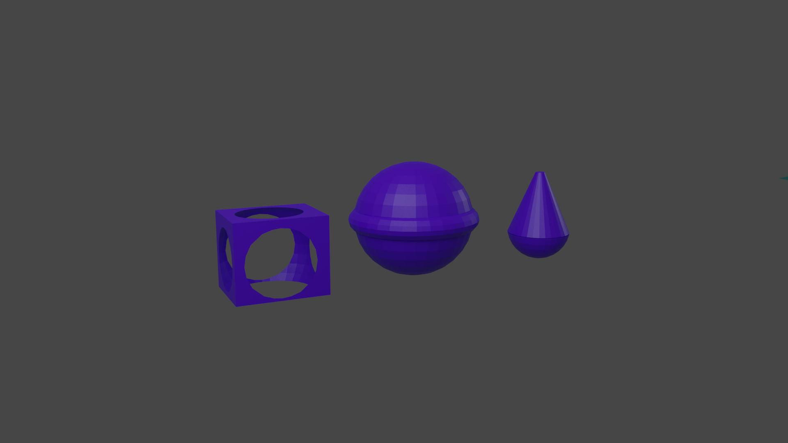
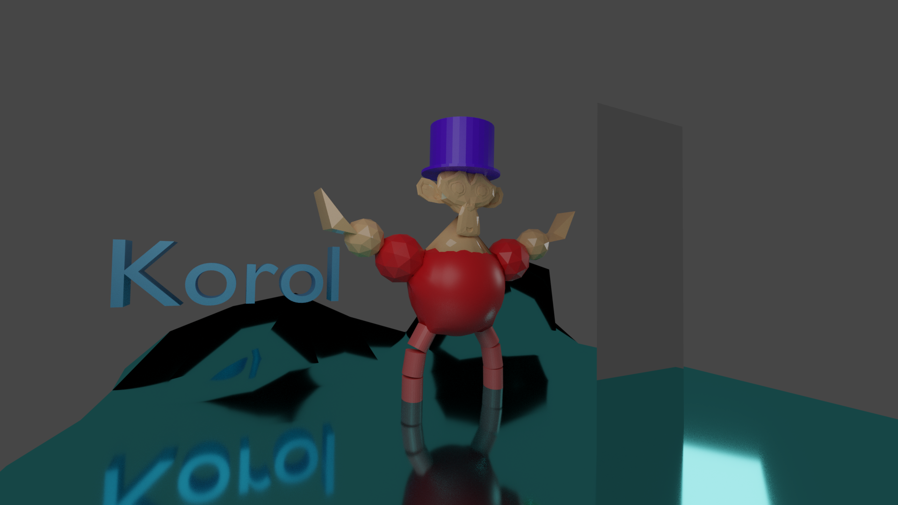

- Установите Blender последней версии для своей операционной системы. Сайт https://www.blender.org/.
- Ознакомьтесь с пользовательским интерфейсом и набором примитивов.
- Создайте несколько простых примитивов на сцене.
- Используя логические модификаторы (объединение, вычитание, пересечение), получите новые объекты.
- Из набора стандартных примитивов создайте скульптуру человечка, используя каждый примитив как минимумодин раз.
- Используя меш-объект «плоскость» создайте пол под скульптурой.
- Используя методы редактирования созданных примитивов, исправьте геометрию скульптуры, чтобы онавыглядела более антропоморфной.
- Используя режим пропорционального редактирования, превратите пол в небольшой холм.
- Добавьте текстуры / цвета для частей тела объекта и пола.
- Создайте зеркало перед скульптурой, добейтесь отражения скульптуры в зеркале.
- Используя инструмент "текст" добавьте на сцену надпись со своей фамилией. Сделайте текст объемным, варьируясвойство Offset.
- Выполните рендеринг созданной сцены в файл изображения.
- Разместите полученное изображение на сайте.
Задачи лабораторной работы
Результаты

